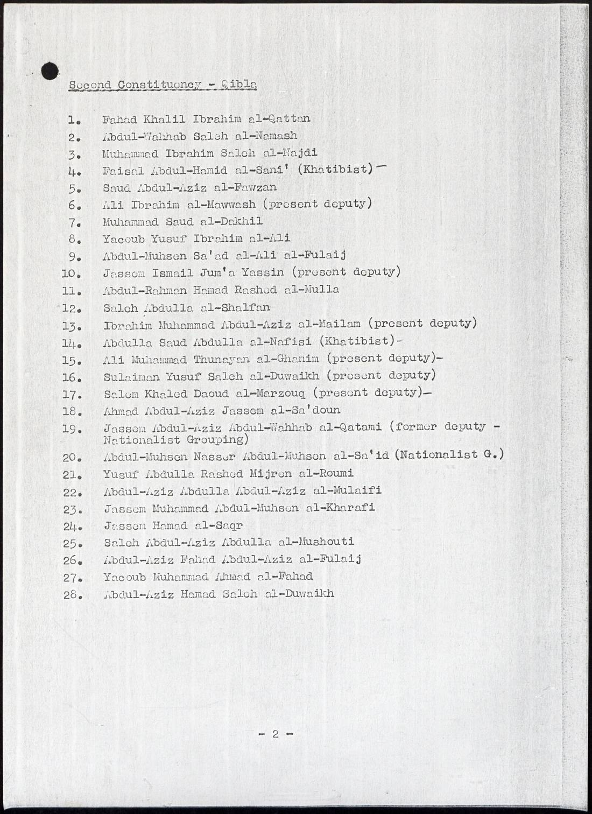
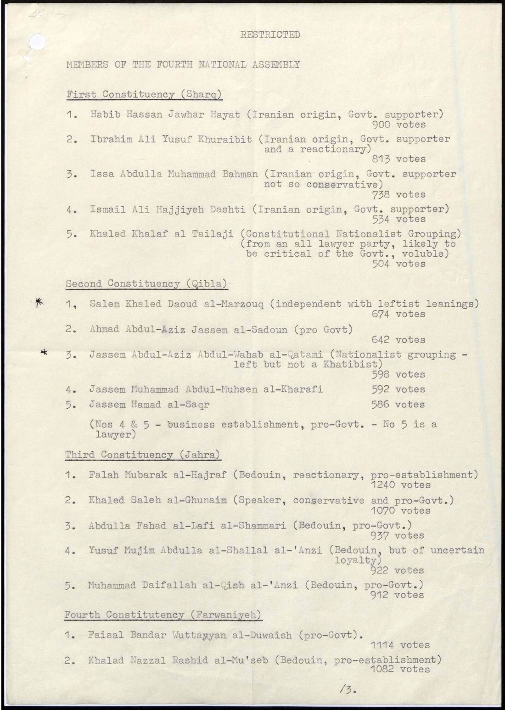

In 1974 Jassim announces a new National Grouping, and the Embassy describes the Nationalist Grouping as supporters of Jassim al Qatami. He stands in the second constituency, Qibla, under his full name, wins third place with 598 votes, and the telegram reports he is widely tipped as the left's leader in the new Assembly.
Why it matters
His full name, Jassem Abdul-Aziz Abdul-Wahab al-Qatami, matches his line in the family tree, and the record gives his exact vote count.
Who is meant
His full name in this record, Jassem Abdul-Aziz Abdul-Wahab al-Qatami, matches his line in the family tree.
Page copies
FCO 8/2189, p. 4

FCO 8/2189, p. 7FCO 8/2189, p. 51

FCO 8/2441, p. 4FCO 8/2441, p. 50
Original text
FCO 8/2189, page 4:
The Nationalist Grouping incidentally is a left-of-centre group, supporters of Jassim al Qatami (LP No 69) a former Deputy who resigned from the National Assembly in 1965 and failed to be re-elected in 1967. He refused to stand in 1971 because of alleged Government interference with the elections. He stands somewhat to the right of the Khatabists but he and his supporters are strong critics of the Government.
FCO 8/2189, page 7, candidates: … Jassem Abdul-Aziz Abdul-Wahhab al-Qatami (former deputy, Nationalist Grouping) …
FCO 8/2189, page 51, translated press summary, 1974:
He denied an accusation by a new grouping called the National Grouping announced by Mr Jassim Qatami, that his Grouping posed a danger to both the Right and the Left. … He went on to say that any agreement between his Grouping and that of Mr Qatami could only be reached if the Nasser myth was ended.
FCO 8/2441, page 4, results, Second Constituency (Qibla):
3. Jassem Abdul-Aziz Abdul-Wahab al-Qatami (Nationalist grouping, left but not a Khatibist), 598 votes.
FCO 8/2441, page 50, telegram:
The left wing lost one seat and generally lost ground but Dr Khatib, Sami al-Munayyis and Abdullah al-Nibari (leading Khatibists) were all returned as was Jassem al-Qatami who is widely tipped as the left's leader in the new National Assembly.
English translation
الملف FCO 8/2189، الصفحة ٤:
والتجمع الوطني بالمناسبة مجموعة يسار الوسط، وهم أنصار جاسم القطامي (الشخصيات البارزة رقم ٦٩)، النائب السابق الذي استقال من مجلس الأمة عام ١٩٦٥ ولم يُعد انتخابه عام ١٩٦٧. ورفض الترشح عام ١٩٧١ بسبب ما قيل عن تدخل الحكومة في الانتخابات. وهو يقف إلى يمين جماعة الخطيب قليلا، لكنه وأنصاره من أشد منتقدي الحكومة.
الملف FCO 8/2189، الصفحة ٧، المرشحون: … جاسم عبدالعزيز عبدالوهاب القطامي (نائب سابق، التجمع الوطني) …
الملف FCO 8/2189، الصفحة ٥١، ملخص صحفي مترجم، ١٩٧٤:
ونفى اتهام تجمع جديد اسمه التجمع الوطني، أعلنه السيد جاسم القطامي، بأن تجمّعه يشكل خطرا على اليمين واليسار معا. … ومضى يقول إن أي اتفاق بين تجمعه وتجمع السيد القطامي لا يمكن أن يتم إلا إذا انتهت أسطورة عبدالناصر.
الملف FCO 8/2441، الصفحة ٤، النتائج، الدائرة الثانية (القبلة):
٣. جاسم عبدالعزيز عبدالوهاب القطامي (التجمع الوطني، يساري لكنه ليس من جماعة الخطيب)، ٥٩٨ صوتا.
الملف FCO 8/2441، الصفحة ٥٠، برقية:
خسر اليسار مقعدا وتراجع عموما، لكن د. الخطيب وسامي المنيس وعبدالله النيباري (من قادة جماعة الخطيب) عادوا جميعا، كما عاد جاسم القطامي المرشح على نطاق واسع لقيادة اليسار في مجلس الأمة الجديد.
Notes
On page 51 the archive's text garbles the name as "Watani" and "Qatani"; the scan reads Qatami. Page 51 is itself a British translation of an Arabic press report.
Others named
Dr Ahmad Al-KhatibSami Al-MunayyisAbdullah Al-Nibari
Sources
The National Archives, London, digitised by the Arabian Gulf Digital Archive (agda.ae). Images reproduced by permission of The National Archives, London, England.
Archive reference
FCO 8/2189 · Internal political situation in Kuwait
FCO 8/2441 · Elections in Kuwait, 27 January 1975
How this text was made: Typed from the archive's own text reading of the scan, corrected against the scan where the reading was garbled. … marks text left out. Arabic translation by Claude; please review.